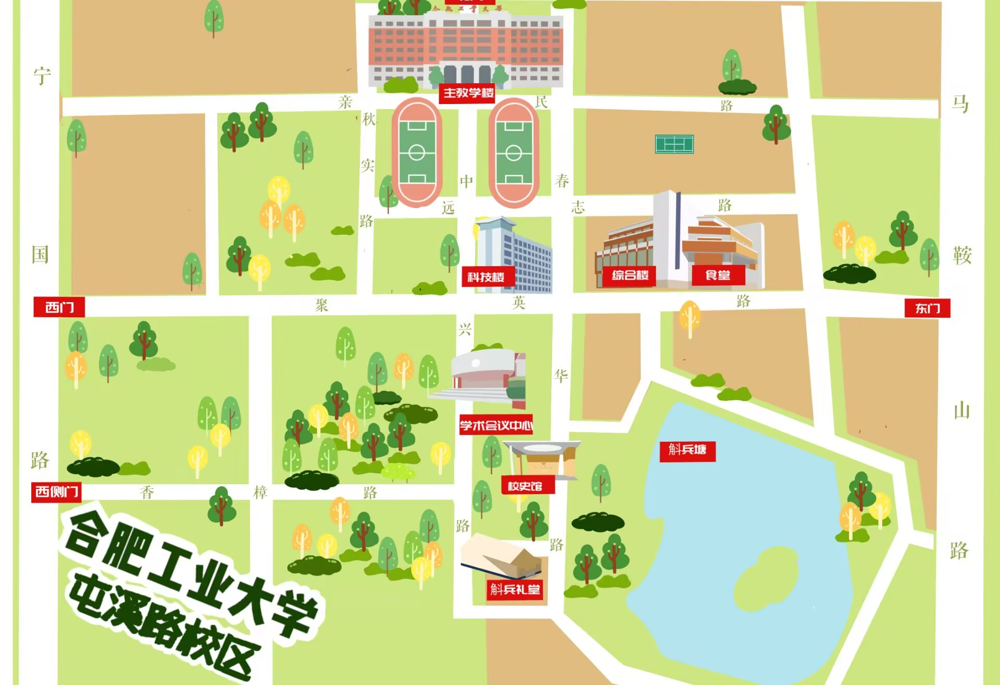
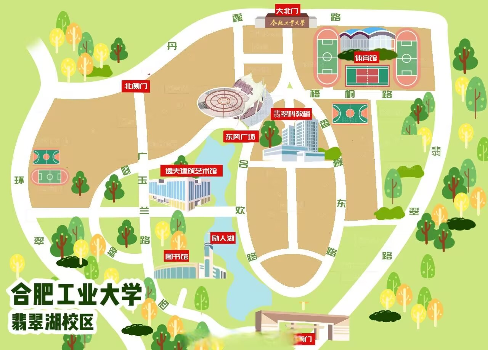

{{ item.title }}
{{ item.desc }}
校园地图


校园景点
{{ currentSpot.category }}{{ currentSpot.campus }}
{{ currentSpot.name }}
{{ currentSpot.desc }}
开发者介绍
张静蕾
合肥工业大学 · 软件学院 · 本科生
身份：前端开发爱好者
学号：2024 212 682
项目初衷：展示校园之美，传承校训精神
联系方式：zhangsan@hfut.edu.cn